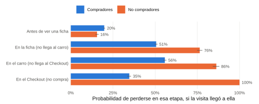
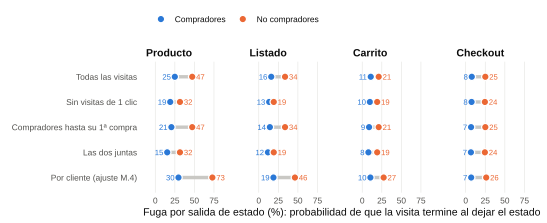
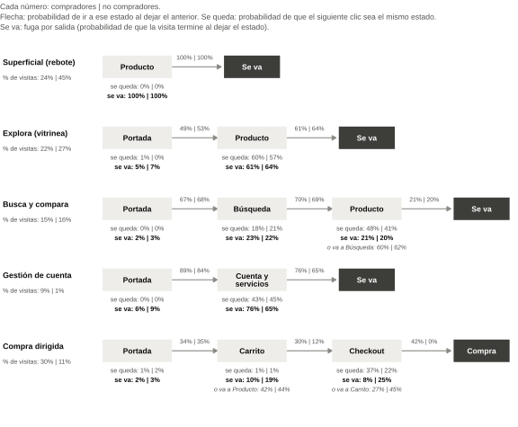
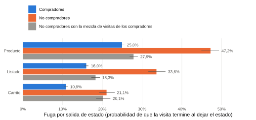

¿Dónde se concentra la fuga y cómo cambia entre compradores y no compradores?
Anexo de la Pregunta 5 del desafío Falabella. Usa la misma cadena de Markov de P4 (orden 1, con autotransiciones, julio 2026) y mide la fuga de tres formas, con intervalos del 95% por bootstrap por cliente.
Por ende, la fuga se concentra en Producto en ambos grupos y en todas las versiones. El no comprador tiene mayor probabilidad de fuga en casi todos los estados: en Producto y Listado, gran parte de la diferencia viene de las visitas de un clic; en Carrito y Checkout se mantiene aunque la visita tenga recorrido. En las visitas con recorrido, el gran quiebre está entre la ficha y el carro (probabilidad de perderse: 51% en compradores y 76% en no compradores). Los que llegan al carro y se van lo hacen sobre todo al volver a la ficha o desde el mismo carro, casi nunca en el pago.
Versión 2 (11-nov): todo en probabilidades, menos versiones en el texto principal, secciones nuevas (cómo termina la visita, caminos típicos, ficha repetida, connector) y la lectura por tipos de visita al final.
- C = compradores (5.000 clientes, 82.236 visitas). NC = no compradores (5.000 clientes, 18.915 visitas).
- Abandono = la visita termina sin comprar. No significa que el cliente se perdió: puede volver en otra visita.
- Entre corchetes, el intervalo del 95% (500 réplicas, sorteando clientes completos; igual que M.5).
Cómo medimos la fuga
Las tres medidas salen de la misma cadena, pero responden preguntas distintas. Ejemplo: Producto, compradores.
| Medida | Pregunta que responde | Cálculo | Ejemplo | Para qué la usamos | Cuidado |
|---|---|---|---|---|---|
| Fuga por salida de estado (principal en P5) | Cuando el cliente deja este estado, ¿qué probabilidad hay de que termine la visita? | Abandonos desde X ÷ clics de X que van a otro estado (sin contar quedarse en X) | 25,0% | Comparar el riesgo entre estados y entre compradores y no compradores. | No dice cuántas personas se pierden: un estado con pocas salidas puede tener fuga alta y pesar poco. |
| Fuga por hit | Estando en este estado, ¿qué probabilidad hay de que el siguiente clic sea el fin de la visita? | Abandonos desde X ÷ todos los clics de X | 12,7% | Conectar con la matriz principal de P4 (lectura por clic). | Se diluye donde el cliente se repite mucho (Producto, Cuenta, Checkout, Otros). Mezcla “se va” con “se queda”. |
| Probabilidad de terminar sin compra (solo compradores) | Si la visita pasa por este estado, ¿qué probabilidad hay de que termine sin compra? | Visitas que pasan por X y terminan sin compra ÷ visitas que pasan por X | 89,7% | Ver qué estados son señal de compra (carro, Checkout). | En no compradores es 100% por definición. Se calcula directo en los datos: con orden 1 (1 − B) sale más alta (ver sección “¿Cómo termina la visita?”). |
| % del total de abandonos | De todas las visitas que terminan sin compra, ¿cuántas se van desde este estado? | Abandonos desde X ÷ todos los abandonos del grupo | 50,7% | Decir dónde se concentra el volumen de la fuga. | Depende del tráfico: un estado muy visitado concentra abandonos aunque su riesgo sea moderado. |
Cómo se conectan: fuga por hit = (1 − % que se queda) × fuga por salida. En Producto (C): (1 − 0,492) × 25,0% = 12,7%. Por eso, si dos grupos se quedan distinto en un estado, la fuga por hit mezcla dos efectos; la fuga por salida aísla el “irse”.
Por qué no usamos otras medidas
- Número de abandonos: los compradores tienen 4,3 veces más visitas; comparar cantidades mediría tamaño del grupo, no comportamiento. Se compara en %.
- Abandono por cliente: el abandono es por visita; el cliente sigue en la muestra. El paso a nivel de cliente se mira aparte (recompra después de un carro sin compra).
Fuga por estado (matriz principal)
Clics = hits del estado que tienen un paso siguiente. Salidas = clics que van a otro estado. Fuente: p5_medidas (versión base).
Diferencia entre compradores y no compradores
Diferencia (en las tablas también “brecha”) = fuga del no comprador − fuga del comprador, en puntos porcentuales (pp): cuánto más se va el no comprador. Si su intervalo no incluye el 0, la diferencia es estadísticamente significativa al 95% (no se debe al azar de qué clientes quedaron en la muestra).
Comprobaciones (detalle): dilución y Checkout sin la opción Compra
¿Cuánto de la brecha en fuga por hit es “se va más” y cuánto es “se queda menos”?
Como fuga por hit = (1 − se queda) × fuga por salida, la brecha se puede repartir exactamente en dos partes (reparto simétrico, usando el promedio de ambos grupos como peso).
Lectura: en Producto, de los 14,7 pp de brecha por hit, 12,1 pp vienen de que el no comprador se va más al salir y 2,6 pp de que se queda menos en Producto. La dilución afecta el nivel, pero no explica la brecha.
Checkout sin la opción Compra
El no comprador no puede comprar. Para comparar en igualdad, a los compradores se les quita la salida a Compra y se recalcula la fuga entre las salidas restantes.
¿Cómo termina la visita? Probabilidad de terminar sin compra (compradores)
Si la visita pasa por el estado, ¿qué probabilidad hay de que termine sin compra? Se calcula directo en los datos. Las dos últimas columnas comparan, en la misma unidad (clics), lo que dice la cadena de orden 1 (1 − B) y la de orden 2: el orden 1 sobreestima el abandono en lo que se encadena (Agregar al carro, Carrito, Checkout); el orden 2 corrige cerca de la mitad del error (M.1). En no compradores es 100% por definición.
Visitas de 1 clic al entrar por Producto
Caminos típicos y dónde se pierden las visitas
Camino = secuencia de estados de la visita, juntando los estados seguidos iguales (Producto, Producto, Producto = Producto). Probabilidad de que una visita siga ese camino = visitas con ese camino ÷ visitas del grupo.
Todas las visitas: los caminos más frecuentes son de 1 clic
Visitas con 2 o más clics
Probabilidad de perderse en cada etapa (visitas con 2 o más clics)
Las etapas se ordenan como un embudo: ficha → carro → Checkout → compra. Para cada etapa: de las visitas que llegaron al menos a ella, probabilidad de que esa sea la etapa más lejana (se pierden ahí).

Visitas sin compra con 2 o más clics: desde dónde se van y transición justo antes de irse
¿Se sostiene? Sensibilidades
En el informe se usan cuatro versiones, cada una por una crítica posible: sin visitas de 1 clic (el no comprador rebota el doble), compradores hasta su 1ª compra (59% de sus visitas es posterior), las dos juntas, y la ponderación por cliente (M.4). Semanas y solo app van en una línea. El resto queda aquí como respaldo.

Recalculamos todo con distintos subconjuntos de visitas y con el ajuste por actividad. En cada réplica del bootstrap se sortean los mismos clientes para todas las versiones.
Robustez de la diferencia en las 18 versiones (detalle)
Para cada estado: en cuántas versiones la diferencia (NC − C) es positiva con intervalo sobre 0, o negativa con intervalo bajo 0.
Ponderación por cliente (ajuste por nivel de actividad, M.4): por qué la diferencia crece
La matriz principal refleja sobre todo a los clientes que más navegan (el “clic promedio”); la ponderación por cliente refleja al “cliente promedio”. No es un error: responden preguntas distintas. El número de grupos de actividad casi no cambia el resultado.
Semanas: orden de la fuga por salida entre los estados del embudo
S1 = 1–7 jul, S2 = 8–14, S3 = 15–21, S4 = 22–28, S5 = 29–31 (incluye la actividad inusual de fin de mes). Entre paréntesis, el puesto del estado (1 = mayor fuga).
¿Quién se va desde Producto?
Para cada visita que terminó en Producto se mira su secuencia completa de clics en la base (conteo directo, sin modelo ni orden 2) y se asigna, en este orden: 1) visita de 1 clic; 2) pasó por el carro antes en la misma visita; 3) entró directo a una ficha y vio más páginas; 4) la visita empezó en otra página (Portada, Búsqueda, Listado…).
En P4 (Tabla 5) ya se vio que la fuga al salir de Producto depende de dónde llegó el cliente: 64% (C) y 84% (NC) cuando entró directo a la ficha. Fuente: producto_quien.
Los que iban camino a comprar
“Camino a comprar” = visitas que pasaron por Agregar al carro o por Carrito. Es la señal de intención más clara que trae la base.
Visitas con carro que terminaron sin compra: ¿desde dónde se fueron?
¿Qué hizo antes de irse? (datos para las hipótesis)
Posibles porqué (hipótesis): desde Producto, vuelve a revisar el producto que agregó (precio, despacho, opiniones) o compara alternativas; desde Carrito, usa el carro como lista de deseos o recordatorio (la mayoría no agregó nada en esa visita); desde Checkout, aparecen el costo y la fecha de despacho (Resumen y despacho) o hay dudas con el pago. Calzan con la encuesta de Baymard Institute (EE.UU.): 42% abandona porque “solo estaba mirando” y, del resto, 40% por costos extra y 20% por despacho lento. Baymard es una encuesta, no clickstream: no hace lo mismo que nosotros.
¿Qué hacen después en el mes?
Checkout por pasos
Los clics del estado Checkout se separan en 4 pasos según node_type: 1) Login (soft login, solo app), 2) Resumen y despacho (one page checkout), 3) Dirección y agenda de despacho (shipping, direcciones, preagendamiento), 4) Pago. Lectura por clic: % de los clics del paso cuyo siguiente paso es cada destino.
El Checkout no es un embudo lineal: por qué cada paso tiene tantos clics distintos
Login aparece solo cuando la app pide iniciar sesión; Dirección solo cuando se cambia o agrega una dirección. Resumen y despacho se repite porque se vuelve a él desde Pago. Compradores y no compradores siempre separados.
Ficha repetida: Producto → Producto con el mismo producto
En la app, muchos Producto → Producto son la misma ficha, casi siempre con distinto page_name y separados por pocos segundos. Hipótesis: la app registra varias pantallas o acciones dentro de una misma ficha (fotos, talla). No se puede afirmar que sea un error de registro.
Tres visitas de ejemplo (app)
Connector: por qué no sirve como canal de entrada
Intentamos usar connector en el primer clic para saber de dónde venía el cliente. No es confiable: (1) calza casi uno a uno con la pantalla del clic, o sea, dice cómo llegó a esa pantalla dentro del sitio; (2) en el primer clic “navegación” es muy común, lo que no tiene sentido para una entrada; (3) en la app, el primer clic que tenemos casi nunca es la página 1 de la visita según source_visit_page_num, lo que sugiere eventos previos que no están en la base. Por ende, lo dejamos fuera; habría que confirmar su definición con Falabella.
Tipos de visita: P4 y P5 con diferenciación de visitas
Complemento de P4 y P5 (pestaña “Respuesta P4 y P5 con diferenciación de visitas”). Cada visita recibe un nombre según cómo navega, no según si compró. La base no cambia: la suma de las transiciones de los cinco tipos reproduce exactamente la matriz de P4. Inspirado en Moe (2003), sin clustering: describe comportamiento, no intención comprobada.
| Orden | Tipo | Regla | Por qué esta señal | Equivalente en Moe (2003) |
|---|---|---|---|---|
| 1 | Superficial (rebote) | 1 solo clic | Entra y se va | Visitas superficiales |
| 2 | Compra dirigida | Llega al carro (Agregar al carro o Carrito) o al Checkout, compre o no | Señal más clara de que eligió un producto | Compra dirigida |
| 3 | Gestión de cuenta | Entra a Cuenta y servicios sin ver fichas | Viene a revisar un pedido o su cuenta | No está en Moe (propia de un retailer con cuenta) |
| 4 | Busca y compara | Usa el buscador (y no llega al carro) | Escribir una búsqueda indica que viene a algo específico | Búsqueda y deliberación |
| 5 | Explora (vitrinea) | El resto: navega sin buscar y sin llegar al carro | Mira sin un objetivo concreto | Exploración (hedonic browsing) |
Probabilidad de que una visita sea de cada tipo
P4 por tipo: camino más probable

P4 por tipo: matriz completa (por clic, con autotransiciones)
P5 por tipo: fuga por salida de cada estado
Entre paréntesis, las salidas del estado. Se muestran solo celdas con 30 salidas o más.
¿La diferencia entre grupos viene del tipo de visita?

Sensibilidades
Compradores antes y después de su 1ª compra:
Reglas alternativas (una a la vez):
Semanas:
Script: fase7_p45_tipos_visita.R (en la carpeta Script R tesis) · datos: p45_tipos_anexo.json.
Qué dicen las validaciones (M.1–M.6) para P5
| Validación | Qué encontramos | Qué significa para P5 |
|---|---|---|
| M.1 Orden 1 | El orden 2 ajusta y predice mejor (BIC y validación cruzada). El orden 1 calcula bien las probabilidades de un paso, pero mezcla orígenes y se equivoca en lo encadenado (Checkout: 28,7% sin compra en los datos, 50,5% con orden 1, 38,8% con orden 2). | La fuga de un paso se mide con la cadena; lo encadenado (cómo termina la visita, caminos) se mide directo en los datos. Siempre se declara la limitación. |
| M.2 Semanas | En compradores el orden de las fugas es igual todas las semanas. En no compradores cambia solo en S5. | La respuesta no depende de la semana. Checkout de no compradores en S5 y en días 30–31 tiene muy pocos datos. |
| M.3 Grupos y app/web | Compradores y no compradores navegan distinto; la web registra distinto (no registra Agregar al carro). | Separar los grupos es lo que pide P5. Solo app da la misma brecha. |
| M.4 Clientes muy activos | Con la ponderación por cliente las diferencias crecen (Producto: 30% vs 73%). | La conclusión no cambia de dirección; la matriz principal muestra la diferencia más chica. |
| M.5 Precisión | Todas las brechas del embudo tienen intervalos que no tocan el 0. | Las diferencias no son ruido. Checkout, Cuenta y Otros de no compradores se leen con cautela. |
| M.6 Tipos de visita | 59% de las visitas de compradores es posterior a su 1ª compra; la entrada cambia el recorrido. | Explica la única brecha negativa (Cuenta y servicios) y gran parte de la brecha en Producto (entrada directa a la ficha). |
Glosario
| Término | Qué significa aquí |
|---|---|
| Fuga / abandono | La visita termina sin compra. Es fin de visita, no pérdida del cliente. |
| Clic (hit) | Cada registro de navegación de la base. El paso de la cadena es el siguiente clic. |
| Salida de un estado | Un clic cuyo siguiente paso es otro estado (o el fin de la visita). Quedarse en el mismo estado no es salida. |
| Se queda (autotransición) | % de los clics del estado cuyo siguiente clic sigue en el mismo estado. |
| Diferencia (brecha) | Fuga del no comprador − fuga del comprador, en puntos porcentuales (pp). |
| Camino de compra | Portada, Búsqueda, Listado, Producto, Agregar al carro, Carrito y Checkout (todos menos Cuenta y servicios y Otros). |
| Probabilidad de perderse en una etapa | De las visitas que llegaron al menos a esa etapa, probabilidad de que esa sea la más lejana. |
| Rebote | Visita de un solo clic. |
| Compradores hasta su 1ª compra | Visitas de compradores que empiezan antes de (o en) la visita de su primera compra del mes. |
| Comparación más justa | Compradores hasta su 1ª compra y sin rebotes, frente a no compradores sin rebotes. |
| Ponderación por cliente | Ajuste por nivel de actividad de M.4: matriz calculada dentro de 4 grupos de clientes según cuántas transiciones hacen y promediada según cuántos clientes tiene cada grupo. |
| Camino a comprar | Visita que pasó por Agregar al carro o Carrito. |
| IC 95% | Intervalo del 95% por bootstrap por cliente (500 réplicas). Mide el error de muestreo, no corrige limitaciones del modelo. |
Descargas y reproducibilidad
- Complementos de la versión 2 (R): fase7_p5_complementos.R (en la carpeta Script R tesis) (tablas nuevas en p5c_anexo.json).
- Script de cálculo (R): fase7_p5_fugas.R (lee df_falabella_estados.rds sin modificarlo y guarda las tablas en CSV en la carpeta resultados_p5). Versión en R de las figuras: fase7_p5_figuras.R.
- Todos los resultados que usa esta página: p5_anexo.json (las figuras de esta página se dibujan con charts.js a partir de ese archivo).
- Anexo de P4 (matrices completas y mapas): anexo-p4.
Anexo P5 · Desafío 2 Customer Journey Falabella · Datos: julio 2026, 729.929 hits, 10.000 clientes. Cálculo propio en R.